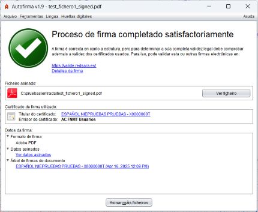
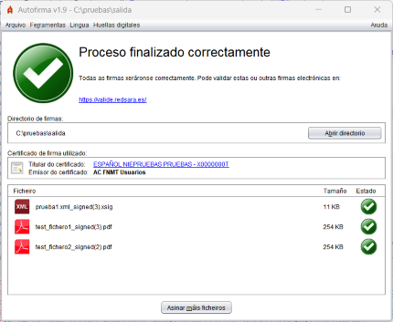
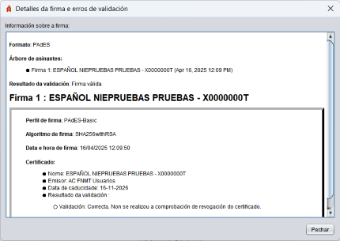

Tras finalizar unha operación de firma, móstrase unha pantalla con información sobre o resultado da operación.
 
Se se desexa obter máis información acerca da firma, pódese pulsar na ligazón Detalles da firma e mostrarase un diálogo con información acerca da mesma:

Esta pantalla divídese en tres seccións:
Información sobre o ficheiro asinado ou o directorio de saída
Móstrase a ruta completa do ficheiro asinado (pode copiar esta ruta pulsando sobre ela co botón dereito do rato) ou a do directorio de saída. Se se realizou a firma PAdES dun documento PDF, mostrarase un botón para abrir o documento asinado coa aplicación predeterminada no sistema.
Información sobre o certificado utilizado para realizar as firmas
É posible ver o certificado (mediante a aplicación predeterminada do sistema operativo) pulsando nas hiperligazóns.
Información detallada sobre a firma ou conxunto de firmas realizas
No caso de asinar un documento, móstranse polo menos os seguintes puntos mediante unha estrutura de árbore:
Para desprazarse entre os elementos da árbore pódense usar os cursores do teclado.
En caso de asinar múltiples ficheiros, mostrarase unha listaxe cos ficheiros xerados, o seu tamaño e resultado. No caso das firmas que non se puideron xerar, mostrarase a ruta do ficheiro de entrada. Pode facer dobre clic sobre unha das firmas da listaxe para acceder á súa información detallada.